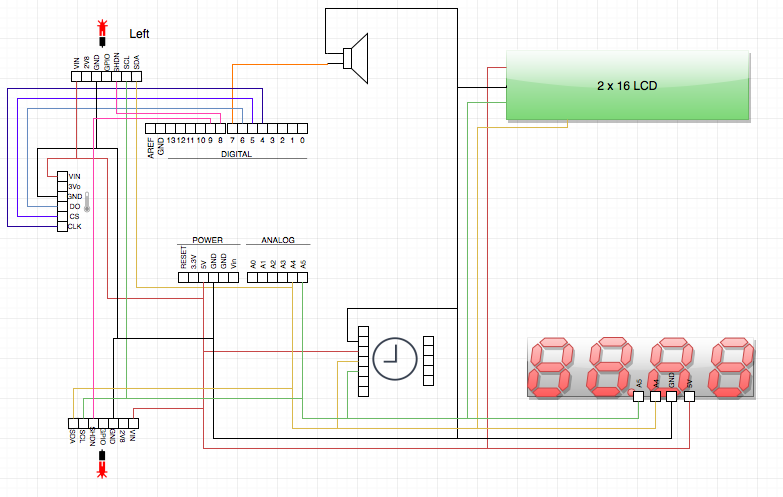
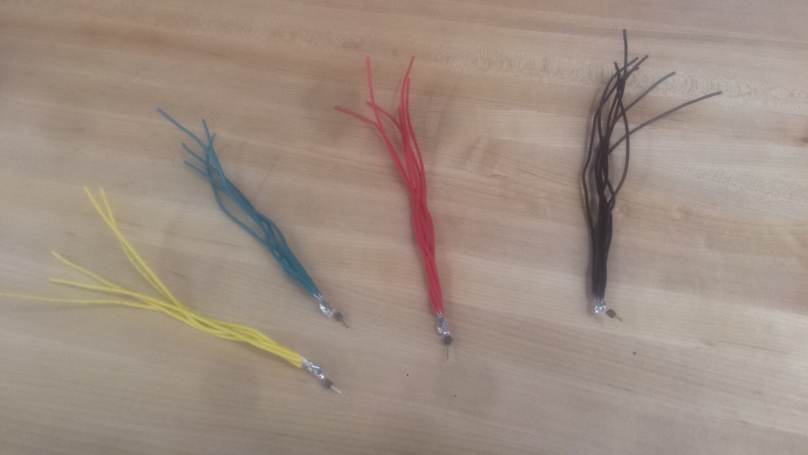
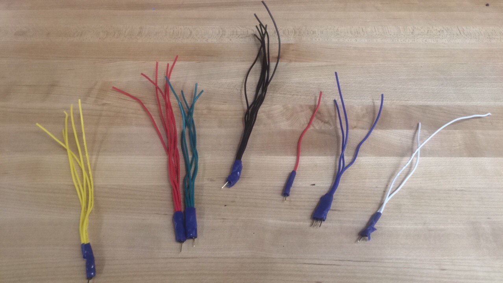
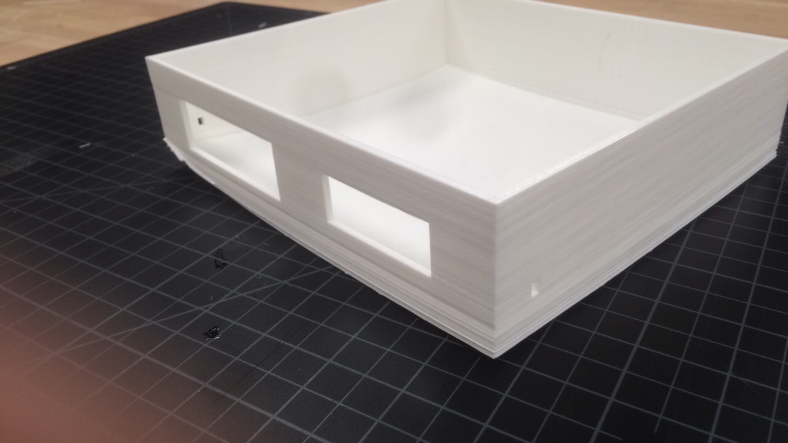
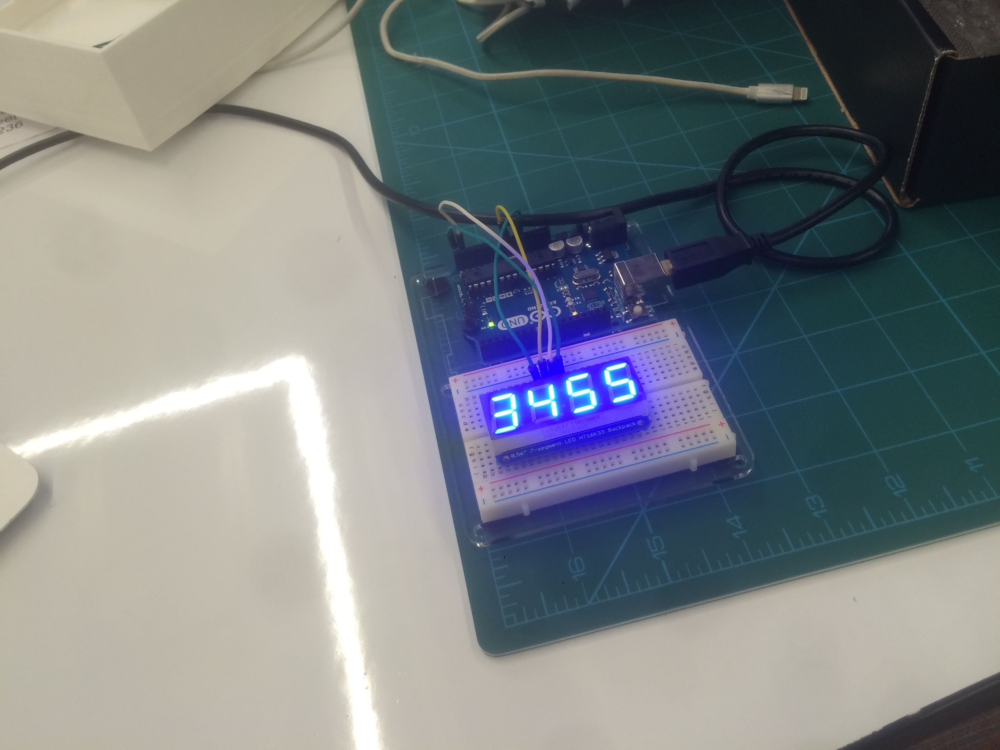

Description
The main objective for this project was do design and create a kitchen assitant device which would offer the cook a clock a timer and a meat thermometer.
One of the main considerations was to allow hands free operation since bacterial contamination is to be avoided at all costs in the kitchen environment.
The functions that the clock can perform are:
- Current tIme:
This is simply a display of the current local time.
- Ambient temperature:
The ambient temperature is an important factor in all food processes that include some kind of fermentation like making bread or yogurts.
- Timer:
You can easily set a count down timer which will emmit an acoustic alert when the time is up.
- Meat thermometer:
By inserting the thermocouple inside the food that is being cooked we can know the internal temperature without having to open the oven. We can set an alarm to be triggered when the temperature reaches a certain temperature and the food is cooked.
- Estimation of finishing time:
By calculating the rate at which the temperature is rising we can estimate when the finishing temperature will be reached. (to be implemented)
- Undercounter light (to be implemented):
With the addition of a relay it would be very simple to turn on and off anything pluged in to our device simply with hand movements.
- Second and third timers (to be implemented)
- Heating element with thermostat control (to be implemented):
An other use for a relay is to plug a heating element to our device which will be placed in a pot with water. If we also insert our thermocouple in the water we can keep it a certain temperature which is ideal for certain low temperature fermentation processes like yogurt.
Equipment and Materials
ELEMENTS USED:
Cables
Electrical Tape
3D Printed box
Laser cut acrylic for front face
Arduino mega
Segment LED display
Backlit LCD display
Time of flight distance sensors (2)
Thermocouple Type-K
Thermocouple amplifier
RTC realtime clock (for keeping stable time during long periods which arduino can't do)
Buzzer
EQUIPMENT AND SOFTWARE USED:
Soldering Iron
3D Printer
Makerbot
Fusion 360
CorelDraw
Laser Cutter
Arduino programing software
Machine Configurations & Files
As for the machine configuraions, I just used the standard configurations for everything. These are the files
I used to print or cut each part:
Bottom Part of BOX
Top of BOX (Part 1)
Top of BOX (Part 2)
Acrylic
Process
First of all, I made a diagram of how I had do wire the clock.

Then, whille I waited for the parts to arrive, I prepared all the wires, and printed the box.



When I got all the parts, I tested them individually.

Then, I started working on a program that would do everything I wanted the clock to be able to do.
// Libraries
#include //Temperature
#include
#include
#include
#include
#include //LASERS
#include //I2C
#include //LCD
#define buzzer 7
#define XSHUTL 8
#define XSHUTR 9
#define MAXDO 6
#define MAXCS 5
#define MAXCLK 4
Adafruit_MAX31855 thermocouple(MAXCLK, MAXCS, MAXDO);
Adafruit_VL53L0X laserL = Adafruit_VL53L0X();
Adafruit_VL53L0X laserR = Adafruit_VL53L0X();
LiquidCrystal_PCF8574 lcd(0x27);
Adafruit_7segment led = Adafruit_7segment();
char mode = 0;
long time1 = -1;
boolean timer1on = false;
char prevHour = 0;
char prevMin = 0;
int temp = 0;
//used for colon blink
boolean colon = false;
const int blink = 500;
unsigned long previousMillis = 0;
void setup() {
Wire.begin();
led.begin(0x70); //start 7-seg
pinMode(buzzer, OUTPUT);
//Setup LASER ADDRESSES AT 01 and 02
pinMode(XSHUTL, OUTPUT);
pinMode(XSHUTR, OUTPUT);
digitalWrite(XSHUTL, LOW);
digitalWrite(XSHUTR, LOW);
delay(10);
digitalWrite(XSHUTL, HIGH);
digitalWrite(XSHUTR, HIGH);
digitalWrite(XSHUTR, LOW);
laserL.begin(0x01);
digitalWrite(XSHUTR, HIGH);
laserR.begin(0x10);
// set up the LCD's number of rows and columns:
lcd.begin(16, 2);
// Print a message to the LCD.
lcd.setBacklight(255);
}
void loop() {
tmElements_t tm;
if (RTC.read(tm)) {
printLED(tm.Hour-5, tm.Minute); // REMOVE -5
}
//Laser Left Check
VL53L0X_RangingMeasurementData_t measureL;
VL53L0X_RangingMeasurementData_t measureR;
laserL.rangingTest(&measureL, false);
laserR.rangingTest(&measureR, false);
if (measureL.RangeStatus != 4 && measureL.RangeMilliMeter < 2000) { // 4 is OUT OF RANGE
if (measureL.RangeMilliMeter < 100) { //0-10cm from left
mode = 1;
} else if (measureL.RangeMilliMeter < 200) {
mode = 2;
}
} else {
mode = 0;
}
//Laser Right Check
if (measureR.RangeStatus != 4 && measureR.RangeMilliMeter < 2000) { // 4 is OUT OF RANGE
if (mode == 1) { //Timer 1
time1 = (measureR.RangeMilliMeter * 3); //1 meter = 3600s = 1h
timer1on = true;
} else if (mode == 2) {
temp = ((measureR.RangeMilliMeter*2)-200);
} else if (measureR.RangeStatus == 0) {
time1 = -1;
timer1on = false;
}
}
}
//THIS IS WHAT THE LED DOES TO RELOAD TIME (Makes colon blink too)
void printLED(int hour, int minute) {
unsigned long currentMillis = millis();
if (currentMillis - previousMillis >= blink) {
previousMillis = currentMillis;
if (colon) {
led.drawColon(false);
} else {
led.drawColon(true);
if (time1 > 0) {
time1 = time1 - 1;
} else if (timer1on){
beep();
}
}
colon = !colon;
}
if (thermocouple.readFarenheit() > temp && temp != 0 && mode != 2) {
beep();
temp = 0;
}
if (hour != prevHour) {
led.writeDigitNum(0, (hour / 10));
led.writeDigitNum(1, (hour % 10));
prevHour = hour;
}
if (minute != prevMin) {
led.writeDigitNum(3, (minute / 10));
led.writeDigitNum(4, (minute % 10));
prevMin = minute;
}
led.writeDisplay();
if (mode == 1) {
lcd.setCursor(0,0);
lcd.print(" SET TIMER ");
lcd.setCursor(0,1);
lcd.print("Timer: ");
if (time1 / 3600 < 10) lcd.print("0");
lcd.print(time1 / 3600);
lcd.print(":");
if ((time1 % 3600) / 60 < 10) lcd.print("0");
lcd.print((time1 % 3600) / 60);
lcd.print(":");
if ((time1 % 3600) % 60 < 10) lcd.print("0");
if (time1 < 0) {
lcd.print("0");
} else {
lcd.print((time1 % 3600) % 60);
}
lcd.print(" ");
} else if (mode == 2) {
lcd.setCursor(0,0);
lcd.print("Temp: ");
lcd.print(thermocouple.readFarenheit());
lcd.print("/");
if (temp < 100 && temp >-10) {
lcd.print(temp);
lcd.setCursor(14,0);
lcd.print("F");
}
lcd.print(temp);
lcd.print("F");
lcd.setCursor(0,1);
lcd.print("SET TEMPERATURE");
} else {
lcd.setCursor(0,0);
lcd.print("Temp: ");
lcd.print(thermocouple.readFarenheit());
lcd.print("/");
lcd.print(temp);
lcd.print("F");
lcd.setCursor(0,1);
lcd.print("Timer: ");
if (time1 / 3600 < 10) lcd.print("0");
lcd.print(time1 / 3600);
lcd.print(":");
if ((time1 % 3600) / 60 < 10) lcd.print("0");
lcd.print((time1 % 3600) / 60);
lcd.print(":");
if ((time1 % 3600) % 60 < 10) lcd.print("0");
if (time1 < 0) {
lcd.print("0");
} else {
lcd.print((time1 % 3600) % 60);
}
lcd.print(" ");
}
}
void beep() {
digitalWrite(buzzer, HIGH);
delay(500);
digitalWrite(buzzer, LOW);
Time Management
This was a really time consuming project and I have spent more than 15 hours developing it. The project needed to be programmed from scratch, and
that took me the most part of my time. Modeling and designing the box was also a long and tedius process, that took some time.
Learnt
From this project, I learnt to not be ambitious with the work my project will perform, because I can run out of space in the arduino easily.
I also learnt, that if I concentrate in something, and dedicate lots of hours to it I will for sure acomplish it.